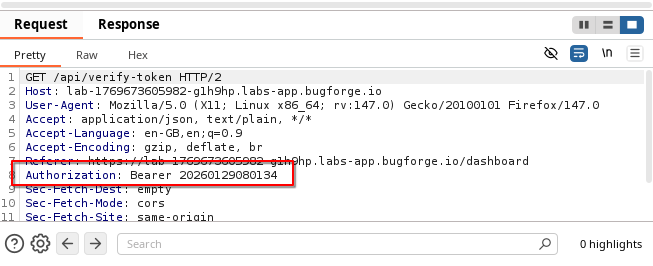
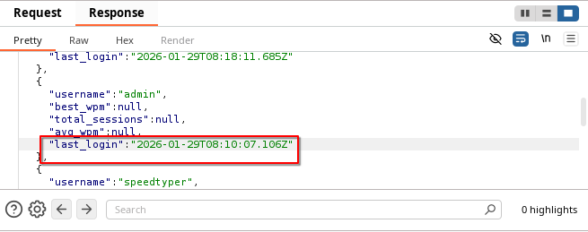
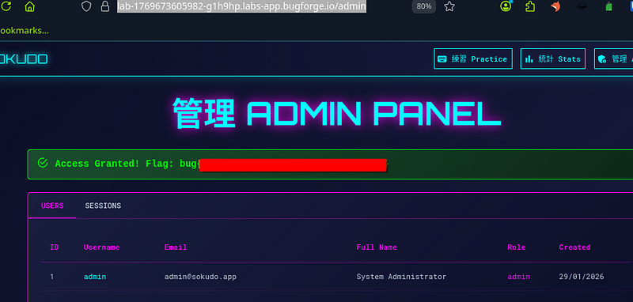

OSCP · OSWP · PWPP · PWPA · PAPA · EnCE · Linux+ · LPIC-1 · Network+ · Security+ · Pentest+ · eJPT · eWPT · BSc · PGCert
Sokudo writeup
Step 1: Register
Pay special attention as you register to the bearer token that gets generated. This is a lesson in look at what the app gives you before you begin hunting for other things.
After you register, you’ll quickly see that your token looks predictable. In fact, it looks just like a year + month + day + time. And that’s because, it is. To be specific, it’s generated at the time you register and log into Sokudo.

Step 2: Locate admin’s token
And there we have it. When you view the leaderboard for Sokudo’s speed-typing challenge, the response shows the last_login. Look familiar? Note down the 20260129081007 (of course, yours will be different but the methodology is the same).

Step 3: Replace the token
Replace your newly constructed token in the browser (or burp) and you’ll see the flag at the bottom of a GET req to: /api/admin/users or simply by refreshing the page and going to /admin

There’s many lessons to be learned here. Don’t use predictable session tokens is probably the main lesson. With this misconfiguration, we were able to gain access to the admin panel which we should not have been able to do.
Thanks for reading!
🍺 Quick message to readers: if my writeups help you, please consider a small donation to my buymeacoffee link here. This is not required but is very much appreciated! 🍺